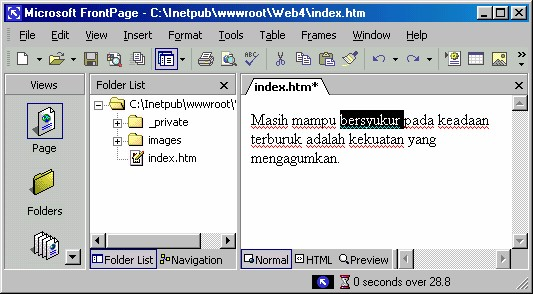
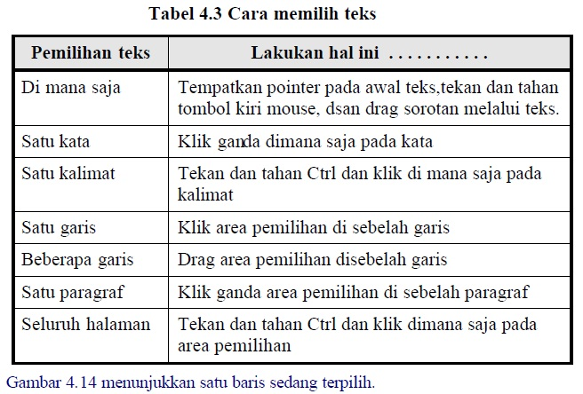
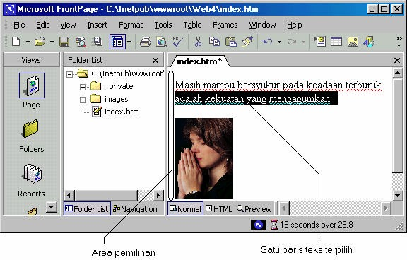

7 Menulis teks dan memilih teks
Berikutnya akan kita bahas tentang penulisan dan pemilihan teks pada halaman.
7.1 Menulis teks
Rasanya tidak ada yang istimewa untuk menuliskan suatu teks ke halaman web.
Caranya sama dengan yang sering digunakan untuk penulisan teks pada program
pengolah kata, yaitu:
1. Tempatkan kursor pada lokasi yang ingin ditulis dengan teks.
2. Mulailah menekan tombol-tombol keyboard untuk menulis teks yang Anda
inginkan.
3. Jangan lupa untuk menyimpan halaman Anda.
7.2 Memilih teks
Banyak pekerjaan baru bisa dilaksanakan setelah dilakukan pemilihan teks. Sebagai
contoh, untuk menggaris bawahi sebuah kalimat, Anda harus memilih teks tersebut
lebih dulu, lalu klik tombol Underline.
Teks yang terpilih akan berubah warna, demikian juga denga warna latar
belakangnya, seperti ditampilkan pada Gambar 4.13, yaitu pada teks bersyukur.

Gambar 4.13 Teks terpilih
Seperti juga proses pergerakan kursor, proses pemilihan teks tentu saja dapat Anda
lakukan dengan memakai mouse maupun keyboard.
7.3 Memilih dengan mouse
Dengan mouse, Anda dapat klik selection area (area pada margin kiri). Jika pointer
mouse bergerak dari bidang ketik ke selection area, pointer tersebut akan berubah
dari bentuk I-beam menjadi bentuk anak panah arah ke kanan-atas.
Tabel 4.3 menampung cara-cara memilih teks memakai mouse.


Gambar 4.14 Baris pertama sedang terpilih
7.4 Cara cepat memilih teks
Untuk memilih teks secara cepat, lakukan hal-hal berikut:
• Klik ganda sebuah kata untuk memilih kata tersebut.
• Tekan dab tahan tobol Ctrl pada keyboard lalu klik ganda untuk memilih
seluruh kalimat di mana pointer berada.
• Anda bisa juga memilih teks dengan cara drag kata yang Anda inginkan,
FrontPage akan memilih seluruh kata-kata yang terlingkupi secara otomatis.
Copyright © Herlan Lesmana
Created with the Freeware Edition of HelpNDoc: Easy CHM and documentation editor